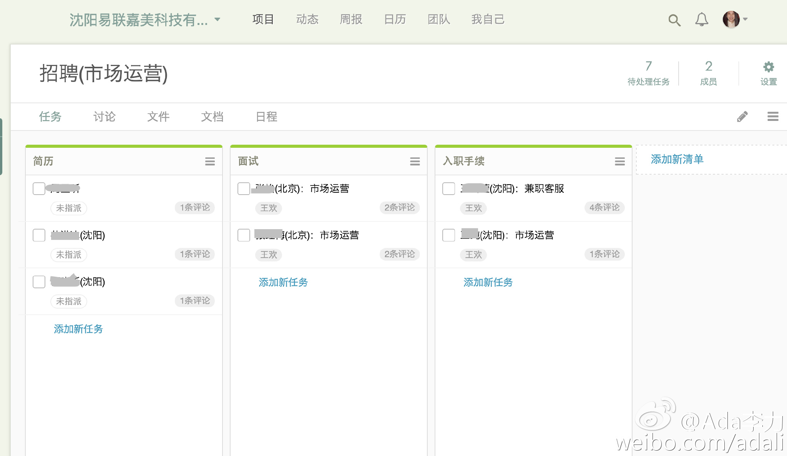

招聘中也可以用敏捷看板，@Tower-彩程 的敏捷看板项目模板还是挺好用的。每个任务对应个候选人，附件中加简历，不合适的就放到回收站。回收站里的候选人及信息可以随时恢复。- 就是没找到彻底删除任务的方法。 
朋友圈里@qyjohn_ 转了一张Ian的照片。当年John曾经邀请过Ian来中国做演讲，我以为只是发了张朋友的照片，随手点了个赞。后来才看到去世的新闻，那个赞没法取消了。 @Linux中国:旧金山警方对 Ian Murdock 死亡案件的说法 - 作者:wxy | Docker 公司的一位发言人说，死亡的具体原因还不确定，但是应该没有可疑之处，这是一个“私人问题（private matter）”。网页链接
今天把iPhone手机邮箱设置为QQ邮箱账号也搞定了。需要从PC端QQ邮箱后台取得第三方邮件客户端特殊密码，通过手机短信校验后，得到随机数密码，填到手机设置中的密码栏里。- QQ邮箱搞的设置这么繁琐，是为了推广自己的邮箱App吧。